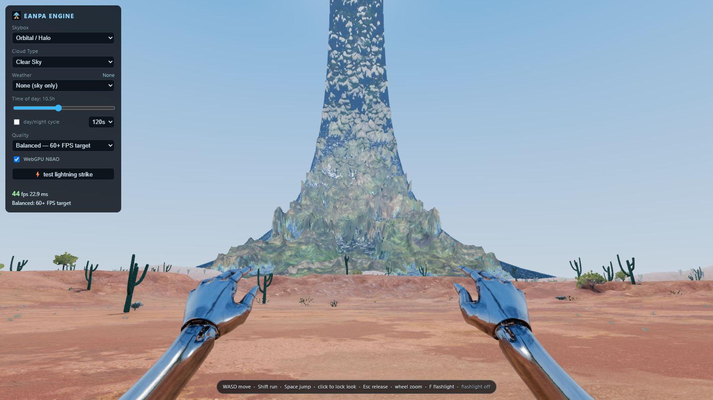
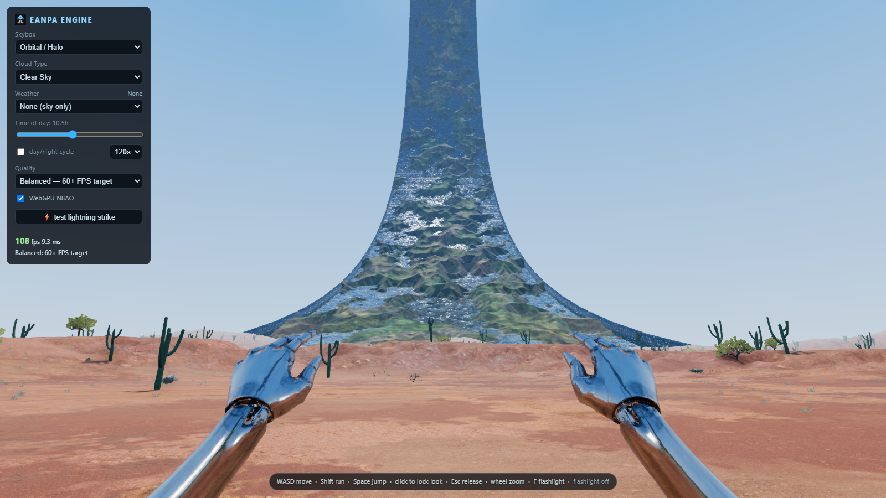
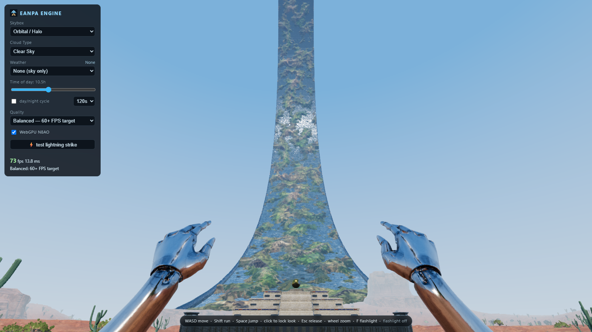
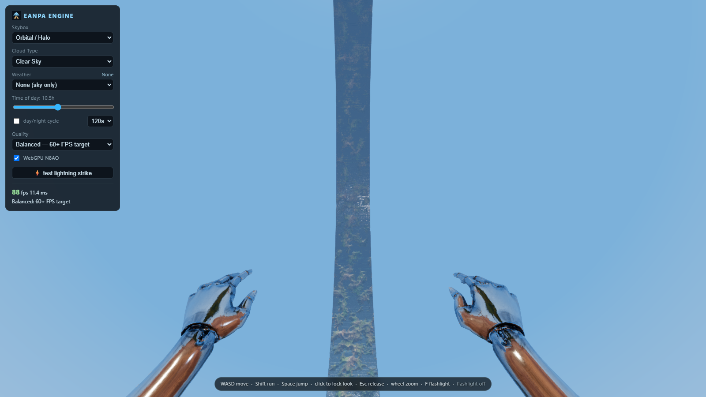
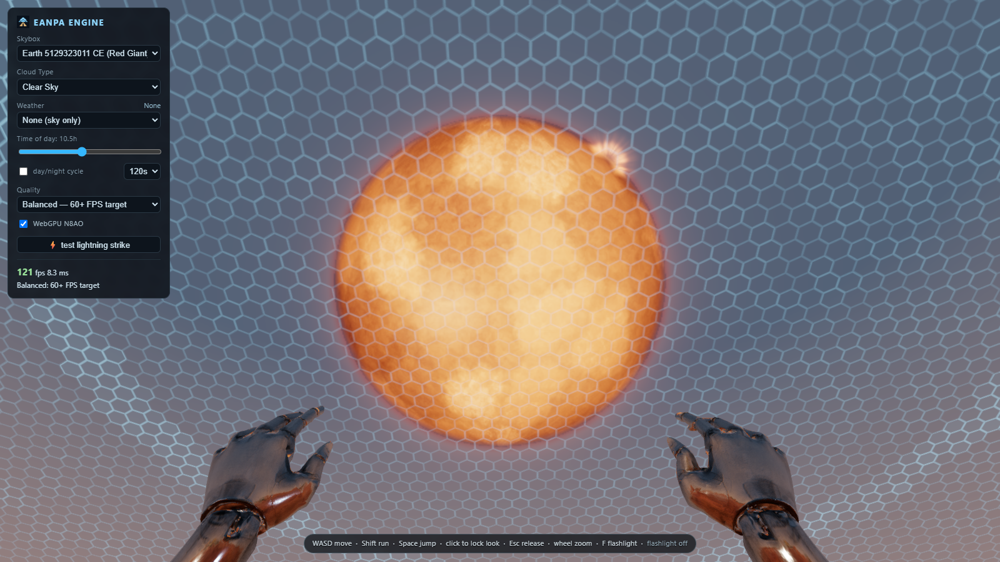
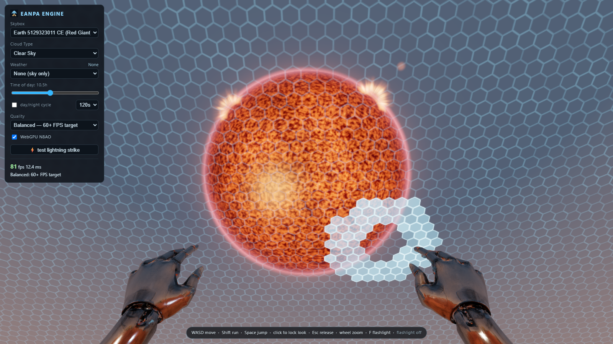
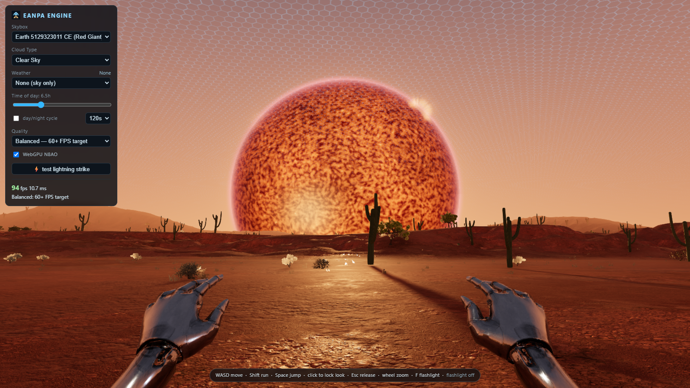

Engine captures following the visual feedback. Open an image for its full resolution. Animation times differ between the previous and corrected captures.
Review the ring in the engine · Review the red giant · Full overhaul gallery
Lower relief and a slope constraint remove the thin spikes and abrupt coastal cliffs. Water now occupies its own undisplaced cylindrical surface. Its shading cannot climb a displaced land triangle. The original animated water response is retained.




The dark ember palette, fine boiling structure and glowing edge return. Surface detail uses a rotating 3D field to avoid longitude/latitude stretching.



Independent short droplets replace the flat dotted crowns. Locations, launch angles, speeds and lifetimes vary between impacts. The same surface capture places them on roofs and ground. These small splashes are best judged in motion.
Actual engine motion at a fixed inspection camera; no added splash artwork or post-production effects. Shader tests and evidence are recorded in the correction checks.
Validation: 53 tests passed, including independent sea-level triangles and physical slope bounds. The older full-resource and constrained benchmark sweep remains in the main gallery with its original revision labels.
{kind=link}
{kind=link}
{kind=link}
{kind=link}
{kind=link}
{kind=link}